Introduction to Genome Annotation
Contributors
Genome Annotation
Structural Annotation
Positions of genomic features along the genome
Functional Annotation
Assigning functions to those features
Speaker Notes
Two parts, structural and function. Structural can come from ab-initio predictions or structural data. Functional annotation often comes from analysis of protein domains or in rare cases from experimental data.
Structural Annotation
Types of elements:
- genes
- regulatory regions
- ncRNA
- repeat elements
- pseudogenes and paralogs
Structural Annotation: Why?
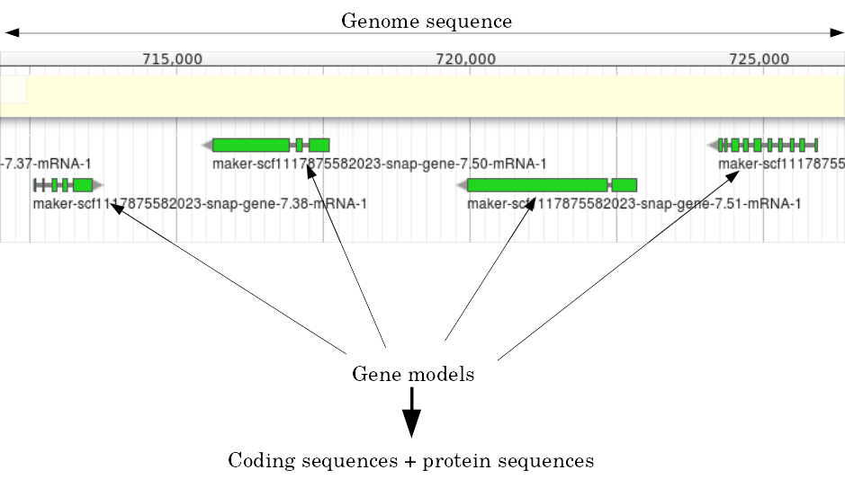
Structural Annotation: Why?
Locate your favorite gene + see what’s next to it
Basis for other analysis, e.g.:
- Transcriptomic data (count reads mapping inside exons)
- Variants detection (SNP, indels, …) and their effects
- Epigenomic (ChIPSeq, FAIRESeq, …)
Compare with other species
- Presence/absence/mutations of genes
- Family reduction or expansion
- Structural variants
Prokaryotic Genes
Speaker Notes
Prokaryotic genes often have a well conserved structure, with a promoter, one or a few genes and a terminator.
Eukaryotic Genes
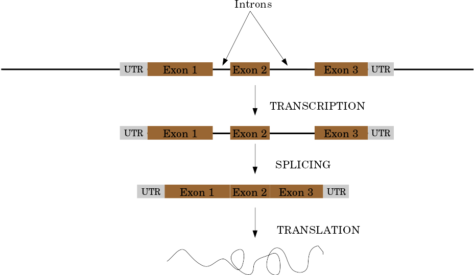
Speaker Notes
Things are a little more complicated for eukaryotic: splicing
Automatic Structural Annotation
Very difficult problem
- Short, variable, unspecific motifs
- Need data to support predictions
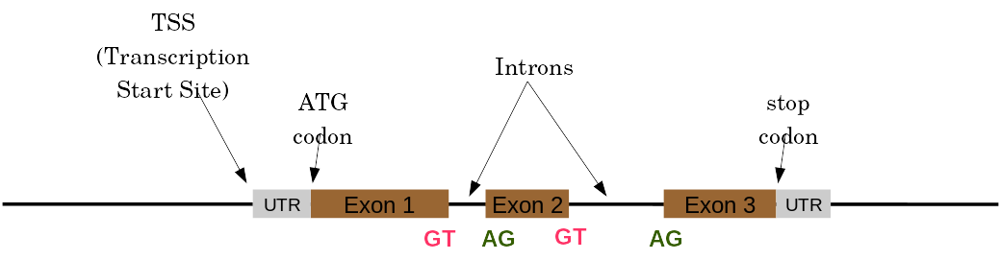
Evidence
Multiple pieces of evidence
- Alignment of RNASeq reads
- Alignment of EST or transcripts (same species or closely related species)
- Alignment of proteins (closely related species)
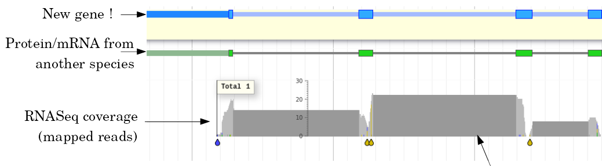
But data unavailable for novel or very distant genes, or unexpressed genes
Ab initio Gene Calling
.pull-left[ Predictions using:
- Genome sequence
- Statistical model (specific to organism)
Models:
- Training on the best evidence-based gene calls
- “Best” = strong evidence, highly conserved
- Training can be iterative:
- train, predict, select best genes, retrain, etc ]
.pull-right.image-90[ 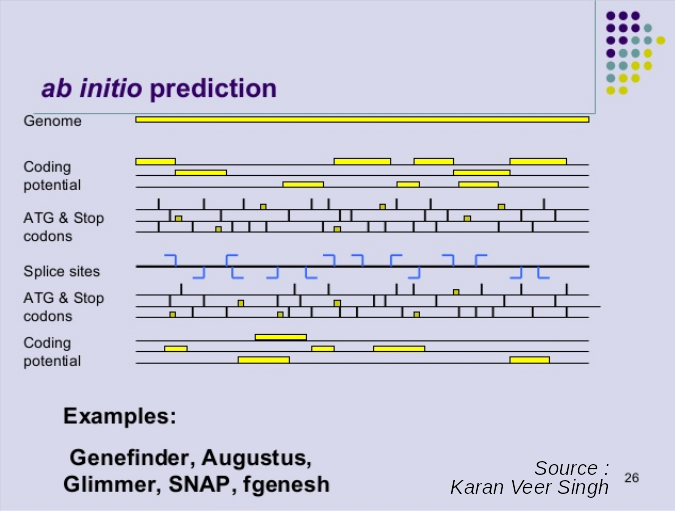 ]
Data Reconciliation
.pull-left[
- Integration of evidence and ab initio predictions
- “Consensus” of multiple sources
- Automated pipelines
- Maker, Braker, Braker3, Funannotate, Pasa, Prokka, …
- Align evidences (or use pre-aligned)
- Run ab initio predictors
- Reconciliate gene models ]
.pull-right.image-90[ 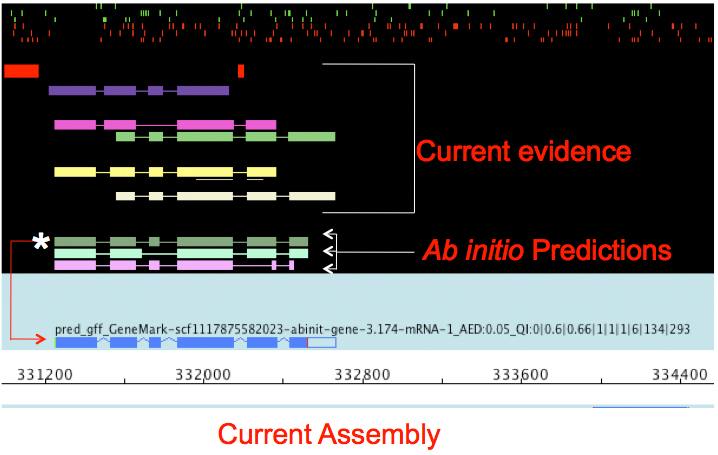 ]
7259342d100 (Remove slides folder and move introduction decks):topics/genome-annotation/tutorials/introduction/slides.html Source: Maker documentation ]
Helixer: a new and different approach
Why is this approach so different?
- Ab-initio annotation of genes in large eukaryotic genomes
- Based on a cross-species deep learning model
- No need for any evidences (RNASeq, aligments, etc)
-
Uses GPUs, fast runtime (few hours max)
Evaluation of annotation: metrics
- Number of genes
- Average number of exons
- Average gene length
- Average protein length
- …
Evaluation of annotation: BUSCO
Benchmarking Universal Single-Copy Orthologs
- Sets of genes having single-copy orthologs in all species of a clade (insects, plants, bacteria, …)
- Genes supposed to be vital for the species
- Expected to be found in a good annotation
- Results:
- Found genes
- Fragmented genes
- Duplicated genes
Evaluation of annotation: Compleasm
- “A faster and more accurate reimplementation of BUSCO”
- Similar results as BUSCO:
- Found genes
- Fragmented genes
- Duplicated genes
Evaluation of annotation: OMArk
- Assign proteins to HOGs using k-mer composition
- HOG = Hierarchical Orthologous Groups (gene families from OMA db)
- Differences vs BUSCO:
- Completeness: also considers genes conserved in multiple copies
- Consistency: checks if (all) proteins matches the auto-detected lineage or not
Visualisation of Results
Genome Browsers (JBrowse, UCSC, …)
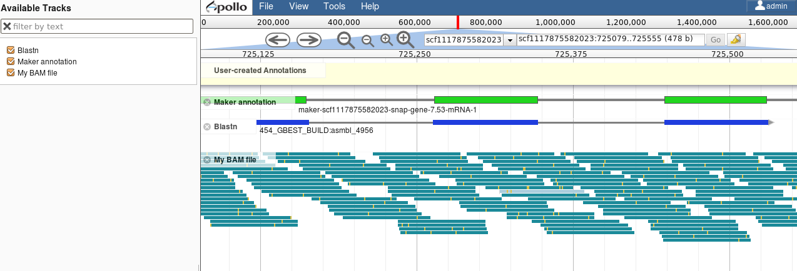
Repeated Elements
- Transposons, Retrotransposons, low complexity regions
- Disrupt gene calling
- Prediction pipelines:
- RepeatMasker
- RepeatModeler
- REPET
- Red
- Databases of repeated elements
- Can be used by pipelines
- Dfam
- RepBase (non free)
Exotic Elements
- tRNA, rRNA, ncRNA, …
- Dedicated tools for prediction
- Aragorn
- tRNAscan
- …
Summary
- Difficult problem
- Automated pipelines
- Need for evidences
- Never perfect
- Missing/incomplete genes
- Split/fused genes
- Pseudogenes
Manual Annotation
- Recruit experts of some gene families
- Manual curation of their favorite genes
- Better annotation
- Things to say in the genome paper
- Limits
- There aren’t experts for all genes
- They can only annotate what is in the sequence
- Poor assembly ⇒ Poor annotation
- We need a user-friendly environment
Editors
Apollo (based upon JBrowse), Artemis, others
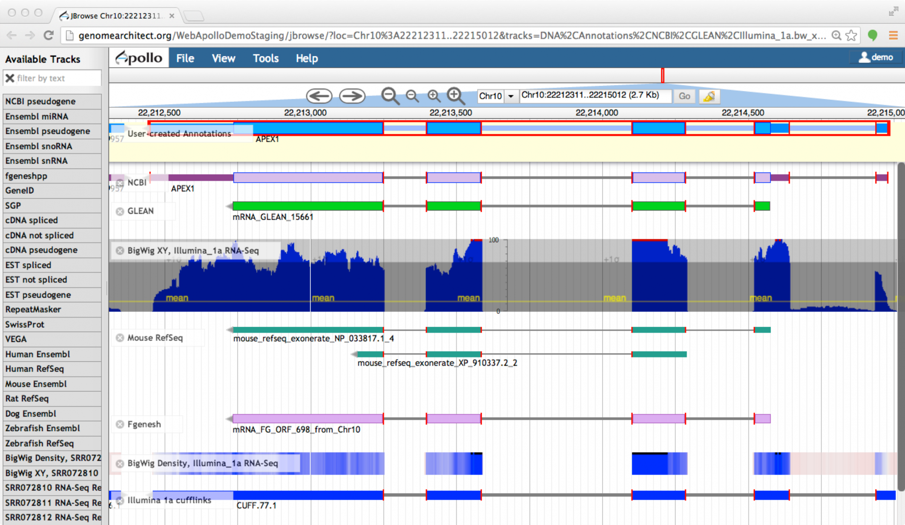
Check out the Apollo tutorials for more details: prokaryotes - eukaryotes
Steps
.pull-left[ Annotations steps
- Check structure (exons, introns, start, stop, utr, …)
- Search for isoforms
- Ensure consistent naming conventions
- Add functional annotations (based on homologies with other species) ]
.pull-right[ 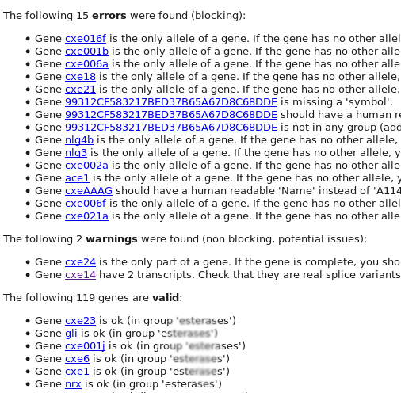 ]
Functional Annotation
Collection of information on the function of identified genes
- Biological function
- Regulation, expression, …
Data Sources
- Wet lab experiments (reliable but long and expensive)
- Manual assignment (cf Apollo)
- Automatic assignment
Methods
- Similarity search / homology
- Pattern search
- Orthologies
- Comparison against databases:
- GenBank, NR: sequence databanks
- InterPro: pattern databank (active sites, protein families, peptide signal …)
- EggNOG: databank of orthology relationships + functional annotation
Blast
- Blast/Diamond against NR
- For each protein (or CDS) of the annotation
- Find the best xx hits
- Huge database, good chances to have a match
- Risk:
- Spread of “putative xx protein”
- Spread of low-evidence annotations
InterProScan
- For each protein (or CDS) of the annotation
- Search for all InterPro patterns
- Many motifs
- Some of them manually curated
- Gene Ontology Terms available for domains
EggNOG
- EggNOG: >4M known orthology groups in >5000 organisms
- Tool using it: EggNOG-mapper
- For each protein of the annotation
- Search for matches with known orthology groups
- Assign corresponding gene name and functional annotation
Gene Ontology
.pull-left[ Controlled vocabulary to describe:
- molecular function
- biological process
- cellular component
- e.g.:
GO:0044430= cytoskeletal part
- e.g.:
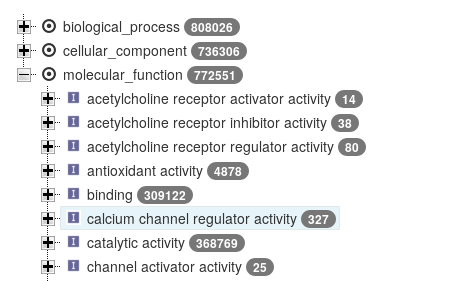 ]
.pull-right[ 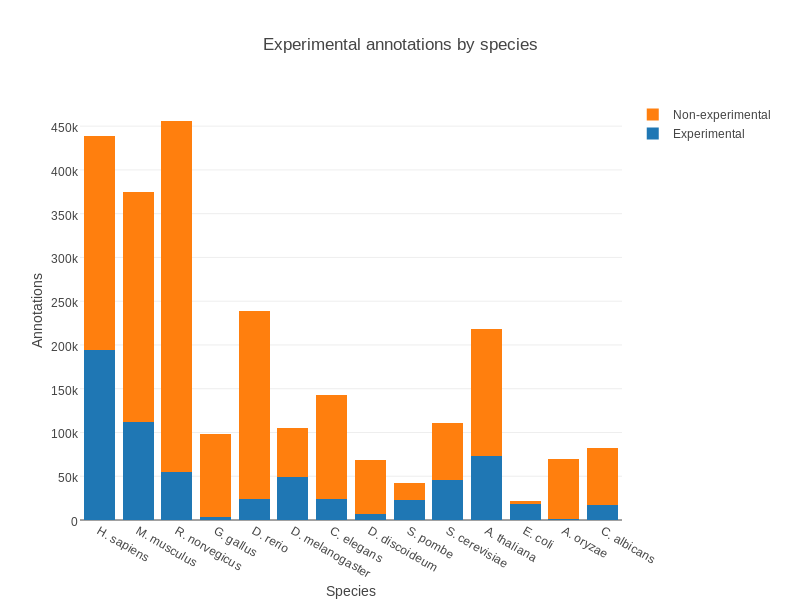 ]
Gene Ontology
Various sources
- InterProScan
- Assigned from matches with annotated motifs
- EggNOG-mapper
- Assigned from matches with annotated orthology groups
- Blast2GO
- Based on Blast (and InterProScan) results
- For each protein (or CDS) of the annotation, tag with GO terms
Orthology
- For each annotated gene
- Search of orthologous genes in related species
- Search for paralogues
- Bioinformatics method:
- Blast all against all transcripts
- Filtering the best hits
- Clustering
- OrthoFinder, OrthoMCL, …
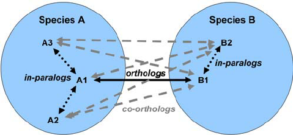
Visualisation
- Genomic databases (NCBI, FlyBase, etc.)
- Other sites (Tripal sites)
- reference data (assembly, annotation, …)
- interfaces to visualize this data
- interfaces for querying (e.g. bipaa.genouest.org)
Comparing annotations
- Needed to choose between different results on a same genome sequence
- Compare general statistics
- Number of genes
- Average number of exons
- Average gene length
- Average protein length
- …
- Compare gene content
- Alignment of gene structures
- Functional annotation
- over/underrepresentation of functions
- Tools: AEGeAN, Funannotate compare
Genome Annotation
- Difficult problem
- Automatic:
- Structural:
- EST/RNA-Seq data provides good evidence
- Ab initio methods are improving
- Functional:
- Concrete evidence cost-prohibitive to obtain
- Various sources of automatic assignment
- Risks of automatically spreading “putative” annotations
- Manual:
- Slow
- Requires experts and evidences
Thank you!
This material is the result of a collaborative work. Thanks to the Galaxy Training Network and all the contributors! Tutorial Content is licensed under
Creative Commons Attribution 4.0 International License.
Tutorial Content is licensed under
Creative Commons Attribution 4.0 International License.